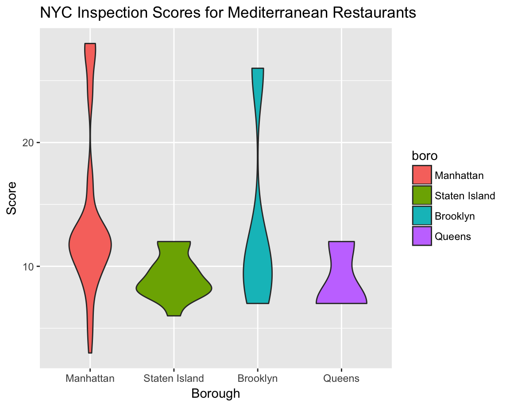
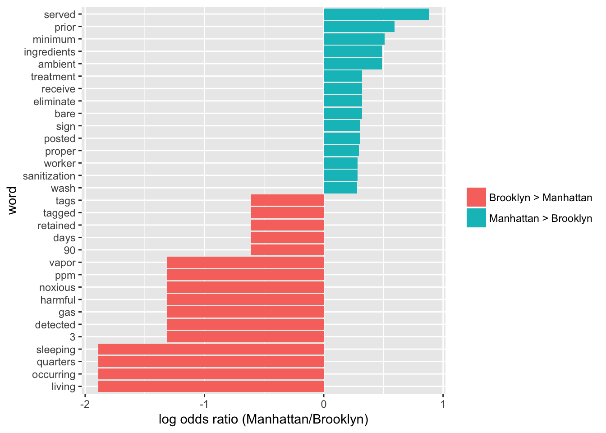
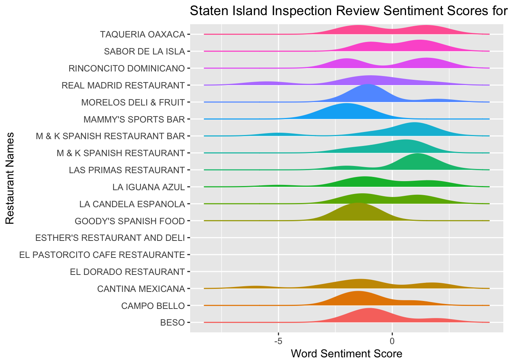

nyc_inspections = read_csv("./data/DOHMH_New_York_City_Restaurant_Inspection_Results.csv.gz",
col_types = cols(building = col_character()),
na = c("NA", "N/A")) %>%
filter(grade %in% c("A", "B", "C")) %>%
mutate(inspection_num = row_number(),
boro = str_to_title(boro)) %>%
select(inspection_num, boro, grade, score, critical_flag, dba, cuisine_description, zipcode,
violation_description)
inspection_words = nyc_inspections %>%
unnest_tokens(word, violation_description)
data(stop_words) #loading stop words dataset
inspection_words =
anti_join(inspection_words, stop_words) #to remove them is opposite of a join from these two datasets (removing any overlap)## Joining, by = "word"word_ratios = inspection_words %>%
filter(boro %in% c("Brooklyn", "Manhattan")) %>%
count(word, boro) %>%
group_by(word) %>%
filter(sum(n) >= 5) %>% #within word calculate the sums and remove anything less than 5
ungroup() %>%
spread(boro, n, fill = 0) %>% #spread it out to calculate odds ratios
mutate(
Manhattan_odds = (Manhattan + 1) / (sum(Manhattan) + 1),
Brooklyn_odds = (Brooklyn + 1) / (sum(Brooklyn) + 1),
log_OR = log(Manhattan_odds / Brooklyn_odds)
) %>% #computing odds ratios
arrange(desc(log_OR))
bing_sentiments = get_sentiments("bing") #positive or negative sentiments
inspection_sentiments = inspection_words %>%
inner_join(., bing_sentiments) %>% #merge everything that overlaps with 2 datasets and keep only that
count(inspection_num, sentiment) %>% #counting pos and neg words in each inspection
spread(sentiment, n, fill = 0) %>% #spreading the data back out to get...
mutate(sentiment = positive - negative) %>% #a total score
select(inspection_num, sentiment)## Joining, by = "word"inspection_sentiments =
right_join(nyc_inspections, inspection_sentiments,
by = "inspection_num")nyc_inspections %>%
filter(str_detect(dba, regex("mediterranean", ignore_case = TRUE))) %>%
mutate(boro = fct_infreq(boro)) %>% #creating factor variable based on freq
ggplot(aes(x = boro, y = score, fill = boro)) + geom_violin() +
labs(x = "Borough" , y = "Score", title = "NYC Inspection Scores for Mediterranean Restaurants")
word_ratios %>%
mutate(pos_log_OR = ifelse(log_OR > 0, "Manhattan > Brooklyn", "Brooklyn > Manhattan")) %>% #finding words that appear most in each group
group_by(pos_log_OR) %>%
top_n(15, abs(log_OR)) %>% #taking top 15 freq appearing words in each groups
ungroup() %>%
mutate(word = fct_reorder(word, log_OR)) %>% #reordering according to log OR
ggplot(aes(word, log_OR, fill = pos_log_OR)) +
geom_col() +
coord_flip() +
ylab("log odds ratio (Manhattan/Brooklyn)") +
scale_fill_discrete(name = "")
inspection_sentiments %>%
filter(boro == "Staten Island",
cuisine_description == "Spanish") %>%
ggplot(aes(x = sentiment, y = dba, color = dba)) +
geom_density_ridges(aes(fill = dba), scale = 0.85) +
theme(legend.position = "none") +
labs(x = "Word Sentiment Score", y = "Restaurant Names", title = "Staten Island Inspection Review Sentiment Scores for Spanish Restaurants") ## Picking joint bandwidth of 0.753